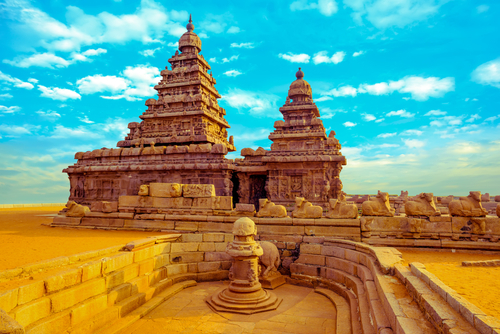

Tourist Places In TamilNadu

Kodaikanal
Kodaikanal is one of the hill stations in the Indian state of Tamil Nadu.Kodaikanal, one of the most celebrated Tamil Nadu tourist places, has its fair share of sightseeing spots like Kodaikanal Lake, Bear Shola Falls, Coakers Walk, Bryant Park, Kurinji Andavar Temple, Vattakanal Waterfalls, and many more. The Coakers Walk in Kodaikanal is known for its breathtaking sunsets and scenic views of the lush green hills. Travellers can reach the Kodai railway station from any part of Tamil Nadu and then proceed to Kodaikanal.
Ooty
Ooty is another hill station in Tamil Nadu famous for its lush green hills and beautiful flower gardens. This town has been a popular Bollywood setting for countless films. The stunning tea gardens and step farming on the hillside are a sight to behold. The popular Tamilnadu tourist places in Ooty are botanical gardens, rose gardens, pine forests, St Stephen’s Church, The Tea Factory & The Tea Museum, Murugan Temple, Elk Hill, Doddabetta Peak, etc. To reach Ooty, you have to take a government or private bus from Mysore bus stand and travel through extremely picturesque roads.

Mahabalipuram
Mahabalipuram is a popular tourist place due to its rich historical and architectural heritage. This town has been the seat of archaeological interests in the state.This Tamil Nadu tourist place also finds significance in religious texts like the Mahabharata, and people flock to the site to behold the ruins of the old kingdom that once was. The popular tourist spots here are Shore Temple, a group of Monuments at Mahabalipuram, Descent of the Ganges, Krishna’s Butter Ball, Varaha Cave, Krishna Mandapam, Nakul Sahadev Chariot, etc. The best way to reach Mahabalipuram would be to take a cab ride from Chennai via East Coast Road.

Kanyakumari
Kanyakumari is the southernmost point in India. The town opens into the ocean and marks the end of the Indian mainland. Swami Vivekananda has been said to have attained enlightenment on the rock at the sea beach in Kanyakumari. Today the site is known as the Vivekananda Rock Memorial. The other popular places of attraction here are Thiruvalluvar Statue, Kanyakumari Beach, Mahatma Gandhi Mandapam, Sarvani Shaktipeeth Shri Kanya Kumari Bhagavathy Amman Temple, Our Lady of Ransom Shrine, Sunset View Point, and Vattakottai Fort. You can travel to Kanyakumari Railway Station to reach the city. The station has several rail links with other Indian cities.
Madhurai
Madurai is located on the Vaigai River and has a rich historical past. This temple city has an impressive number of temples known for their colourful hues and prominent sculpting. The Meenakshi Temple is a favourite among the Hindus of India and receives hundreds of devotees. You need to also visit Thirumalai Nayak Palace, Gandhi Memorial Museum, Athisayam, Sri Koodal Azhagar Temple, Arulmigu Kallalagar Temple, Vandiyur Mariamman Teppakulam, and Samanar Jain Hills when touring Madurai.Madurai can be reached from Chennai via Chennai – Theni Hwy/Chennai – Villupuram – Trichy – Kanyakumari Rd.
Yercaud
Yercaud is a hill station and offers some beautiful lakes and breathtaking sceneries of the hills. Nature photography is a top thing to do in Yercaud.
A popular resort town, Yercaud offers some amazing tourist spots like Kiliyur Falls, Lady’s Seat, Manjakuttai View Point, Children’s Seat, Gowri Woodlands Estate Lake, Sacred Heart Church, and much more. Tourists can take the NH44 highway from Madurai to easily reach Yercaud within a day.
Thanjavur
Last but not least on this list of places to visit in Tamil Nadu is thanjavur.Thanjavur or Tanjore is another famous tourist destination in Tamil Nadu. Tanjore paintings are world-famous and considered to be one of the finest forms of art. The city also contains some UNESCO World Heritage Sites, namely the Great Living Chola Temples. It is also an important Hindu pilgrimage site in Tamil Nadu, especially the Brihadeeswarar Temple. This ancient kingdom from the 11th century was constructed by the Chola kingdom and still continues to mesmerise tourists with its rock-cut structure.The other important places to visit here are Sarasvati Mahal Library, Royal Palace Museum, Punnainallur Sree Maha Mariamman Temple, Sangeetha Mahal, Arulmigu Aiyarappar Temple and Thanjapureswarar Temple. Tanjore can be reached from Chennai by the NH38 and NH32 highways.